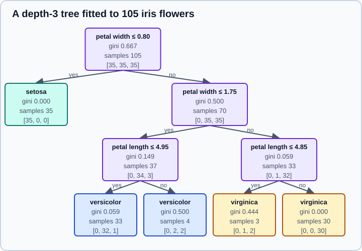
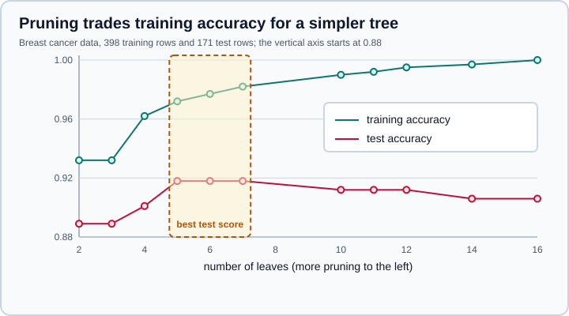

Decision Trees
|
This content was generated with the assistance of AI and should be verified against the official documentation before being relied on in production. |
A decision tree predicts by asking a sequence of yes-or-no questions about the features, each answer sending the example down one branch until it reaches a leaf that holds the prediction. Trees need no feature scaling, handle numeric features of any distribution, can be printed and read, and are the building block of random forests and gradient boosting. Their weaknesses are just as characteristic: a fully grown tree memorises its training data, and small changes in the data can produce a very different tree. This page targets NumPy 2.5 and scikit-learn 1.9, was checked in October 2026, and every example was run on Python 3.13.18, NumPy 2.5.4 and scikit-learn 1.9.1. Examples target Python 3.13 or 3.14.
The estimators are in sklearn.tree and follow The Estimator API. The ensembles built from trees are on Random Forests & Bagging and Gradient Boosting & HistGradientBoosting. For the over- and underfitting vocabulary used below see Machine Learning Fundamentals.
How a tree is grown
scikit-learn implements an optimised version of CART (classification and regression trees). Starting with all training rows in the root, the algorithm considers every feature and every threshold between consecutive sorted values, and keeps the single binary split (feature <= threshold) that most reduces an impurity measure in the two children. It then repeats on each child until a stopping rule applies. The older ID3 and C4.5 algorithms, found in textbooks, build multiway trees on categorical features; they are not what scikit-learn runs, and the scikit-learn implementation does not handle categorical features natively. Encode them first (see Encoding Categorical Features), or use HistGradientBoostingClassifier, which does.
A tree is a piecewise-constant function: each leaf predicts the majority class (or class fractions) or the mean target of the training rows that reached it. Every node stores its impurity and the number of training samples, which the figure shows for a real tree.

from sklearn.datasets import load_iris
from sklearn.model_selection import train_test_split
from sklearn.tree import DecisionTreeClassifier, export_text
X, y = load_iris(return_X_y=True, as_frame=True)
X_tr, X_te, y_tr, y_te = train_test_split(X, y, test_size=0.3, stratify=y, random_state=0)
tree = DecisionTreeClassifier(max_depth=3, random_state=0).fit(X_tr, y_tr)
print("accuracy", round(tree.score(X_te, y_te), 3))
print("depth", tree.get_depth(), "leaves", tree.get_n_leaves(), "nodes", tree.tree_.node_count)
print(export_text(tree, feature_names=list(X.columns), show_weights=True))Output:
accuracy 0.956 depth 3 leaves 5 nodes 9 |--- petal width (cm) <= 0.80 | |--- weights: [35.00, 0.00, 0.00] class: 0 |--- petal width (cm) > 0.80 | |--- petal width (cm) <= 1.75 | | |--- petal length (cm) <= 4.95 | | | |--- weights: [0.00, 32.00, 1.00] class: 1 | | |--- petal length (cm) > 4.95 | | | |--- weights: [0.00, 2.00, 2.00] class: 1 | |--- petal width (cm) > 1.75 | | |--- petal length (cm) <= 4.85 | | | |--- weights: [0.00, 1.00, 2.00] class: 2 | | |--- petal length (cm) > 4.85 | | | |--- weights: [0.00, 0.00, 30.00] class: 2
export_text prints the rules, which is the quickest way to read a tree and to check it against domain knowledge. plot_tree draws the same tree with Matplotlib, and export_graphviz writes a DOT file for Graphviz:
import matplotlib
matplotlib.use("Agg")
import matplotlib.pyplot as plt
from sklearn.tree import plot_tree
fig, ax = plt.subplots(figsize=(10, 6))
plot_tree(tree, feature_names=list(X.columns), class_names=["setosa", "versicolor", "virginica"],
filled=True, ax=ax)
fig.savefig("iris-tree.png", dpi=100)Source: scikit-learn: plot_tree
The Agg backend line is only needed in a script without a display; in a notebook omit it. Matplotlib’s explicit figure and axes interface is explained on Data Visualization.
Inspecting a fitted tree
print(dict(zip(X.columns, tree.feature_importances_.round(3).tolist())))
sample = X_te.iloc[:1]
print("leaf", tree.apply(sample), "path", tree.decision_path(sample).indices)
print(tree.predict_proba(X_te.iloc[:2]))
T = tree.tree_
print(T.feature[:3], T.threshold[:3].round(2), T.impurity[:3].round(3), T.n_node_samples[:3])Output:
{'sepal length (cm)': 0.0, 'sepal width (cm)': 0.0, 'petal length (cm)': 0.034, 'petal width (cm)': 0.966}
leaf [8] path [0 2 6 8]
[[0. 0. 1.]
[0. 0. 1.]]
[ 3 -2 3] [ 0.8 -2. 1.75] [0.667 0. 0.5 ] [105 35 70]
-
applyreturns the leaf index of each row, anddecision_patha sparse matrix of the nodes visited, here nodes 0, 2, 6 and 8. -
tree_exposes parallel arrays per node:feature(the column index,-2for a leaf),threshold,impurity,n_node_samples,value,children_leftandchildren_right. This is the structure a printer or an exporter walks. -
predict_probareturns the class fractions of the leaf. A leaf that is pure gives probabilities of exactly 0 and 1, which is why single trees are poorly calibrated (Probability Calibration). -
When two classes tie in a leaf,
predictpicks the one with the lowest index inclasses_. -
feature_importances_is the total impurity decrease contributed by each feature, normalised to sum to 1 (the "mean decrease in impurity"). It is computed on the training data, favours features with many distinct values, and splits credit arbitrarily among correlated features. Permutation importance on held-out data is more trustworthy; see Random Forests & Bagging for a comparison.
Split criteria
For classification the criterion is "gini" (default), "entropy" or "log_loss". Gini impurity of a node with class fractions p_k is 1 - sum(p_k^2); entropy is -sum(p_k log p_k); "log_loss" is the same quantity as "entropy". They rarely change the result much.
import numpy as np
from sklearn.datasets import load_breast_cancer
from sklearn.model_selection import cross_val_score
Xc, yc = load_breast_cancer(return_X_y=True)
Xc_tr, Xc_te, yc_tr, yc_te = train_test_split(Xc, yc, test_size=0.3, stratify=yc, random_state=0)
for criterion in ("gini", "entropy", "log_loss"):
score = cross_val_score(DecisionTreeClassifier(criterion=criterion, random_state=0), Xc, yc, cv=5).mean()
print(f"{criterion:<9} {score:.3f}")Output:
gini 0.917 entropy 0.935 log_loss 0.935
The two-point difference on one data set and one set of folds is within what a different seed would produce, so no criterion is better in general; compare by cross-validation only if it matters. For regression the criteria are "squared_error" (default, variance reduction, leaves predict the mean), "absolute_error" (leaves predict the median, more robust to outliers and much slower to fit) and "poisson" (for non-negative counts or rates). The value "friedman_mse" is deprecated since scikit-learn 1.9 and will be removed in 1.11: it always gave the same trees as "squared_error", and using it now raises a FutureWarning.
The splitter argument chooses "best" (the best threshold per candidate feature) or "random" (a random threshold per candidate feature, then the best of those), which is what extremely randomised trees use. max_features limits the number of features examined at each split, which speeds fitting and decorrelates trees inside an ensemble; for a single tree the default None (all features) is usual.
Overfitting and the size controls
With default settings a tree keeps splitting until every leaf is pure, so training accuracy reaches 1.000 whatever the data. The arguments below limit the size.
| Argument | Effect |
|---|---|
|
Maximum number of levels; the most common control. Default |
|
Minimum samples needed to split a node (default 2). A float is a fraction of the training rows. |
|
Minimum samples in every leaf (default 1). Smooths regression and makes classification leaves more reliable. |
|
Like |
|
Grow the tree best-first up to this number of leaves. |
|
A split is made only if it reduces the weighted impurity by at least this amount. |
|
Cost-complexity pruning after growth, described below. |
for depth in (1, 2, 3, 5, None):
t = DecisionTreeClassifier(max_depth=depth, random_state=0).fit(Xc_tr, yc_tr)
print(f"max_depth={str(depth):<5} leaves={t.get_n_leaves():<3} "
f"train={t.score(Xc_tr, yc_tr):.3f} test={t.score(Xc_te, yc_te):.3f}")Output:
max_depth=1 leaves=2 train=0.932 test=0.889 max_depth=2 leaves=4 train=0.942 test=0.906 max_depth=3 leaves=8 train=0.980 test=0.901 max_depth=5 leaves=15 train=0.997 test=0.912 max_depth=None leaves=16 train=1.000 test=0.906
Training accuracy climbs steadily to 1.000, while test accuracy moves within a few tenths of a percentage point (one test row is 0.006 of 171), so the extra depth bought nothing on new data. The documentation suggests starting with max_depth=3 to see how the tree behaves, and min_samples_leaf=5 as a first value, then searching. A search over several size controls at once, with the cross-validation caveats of Grid, Randomized & Halving Search, looks like this:
from sklearn.model_selection import GridSearchCV
grid = GridSearchCV(DecisionTreeClassifier(random_state=0),
{"max_depth": [2, 3, 4, 5, 8], "min_samples_leaf": [1, 5, 10, 20]}, cv=5).fit(Xc_tr, yc_tr)
print(grid.best_params_, "cv", round(grid.best_score_, 3), "test", round(grid.score(Xc_te, yc_te), 3))Output:
{'max_depth': 3, 'min_samples_leaf': 5} cv 0.935 test 0.912
Cost-complexity pruning
Pre-pruning with max_depth stops growth early. Post-pruning grows a full tree and then removes the branches that earn the least. Minimal cost-complexity pruning minimises R(T) + alpha |T|, the training error of the tree plus alpha per leaf, so a larger alpha gives a smaller tree. cost_complexity_pruning_path returns the effective alphas at which the tree would shrink, one per pruning step, so each of them is a meaningful candidate for ccp_alpha.
full = DecisionTreeClassifier(random_state=0).fit(Xc_tr, yc_tr)
path = full.cost_complexity_pruning_path(Xc_tr, yc_tr)
print("candidate alphas:", len(path.ccp_alphas))
for alpha in path.ccp_alphas[:-1]:
t = DecisionTreeClassifier(ccp_alpha=alpha, random_state=0).fit(Xc_tr, yc_tr)
print(f"ccp_alpha={alpha:.5f} leaves={t.get_n_leaves():<3} "
f"train={t.score(Xc_tr, yc_tr):.3f} test={t.score(Xc_te, yc_te):.3f}")Output:
candidate alphas: 12 ccp_alpha=0.00000 leaves=16 train=1.000 test=0.906 ccp_alpha=0.00249 leaves=14 train=0.997 test=0.906 ccp_alpha=0.00250 leaves=12 train=0.995 test=0.912 ccp_alpha=0.00419 leaves=11 train=0.992 test=0.912 ccp_alpha=0.00490 leaves=10 train=0.990 test=0.912 ccp_alpha=0.00492 leaves=7 train=0.982 test=0.918 ccp_alpha=0.00879 leaves=6 train=0.977 test=0.918 ccp_alpha=0.00899 leaves=5 train=0.972 test=0.918 ccp_alpha=0.01959 leaves=4 train=0.962 test=0.901 ccp_alpha=0.02586 leaves=3 train=0.932 test=0.889 ccp_alpha=0.02655 leaves=2 train=0.932 test=0.889
The last alpha, omitted from the loop, would prune the tree to its root. As pruning proceeds the training accuracy falls, while the test accuracy first rises slightly (5 to 7 leaves) and then drops once real structure is removed.

Choose ccp_alpha by cross-validation on the training data, never by the test score as the table above might tempt you to do:
search = GridSearchCV(DecisionTreeClassifier(random_state=0),
{"ccp_alpha": path.ccp_alphas[:-1]}, cv=5).fit(Xc_tr, yc_tr)
best = search.best_estimator_
print("best ccp_alpha", round(search.best_params_["ccp_alpha"], 5), "leaves", best.get_n_leaves())
print("cv", round(search.best_score_, 3), "test", round(best.score(Xc_te, yc_te), 3))Output:
best ccp_alpha 0.00879 leaves 6 cv 0.932 test 0.918
Cross-validation chose a six-leaf tree, and the test set (used once) agrees. The same ccp_alpha argument exists on the forests and on ExtraTreesClassifier.
Instability
A tree is a high-variance model: the root split depends on a few rows near the best threshold, and everything below it changes with it. The loop fits a depth-2 tree on four random 80 percent subsets of the same data:
for seed in range(4):
idx = np.random.default_rng(seed).choice(len(Xc), size=int(0.8 * len(Xc)), replace=False)
t = DecisionTreeClassifier(max_depth=2, random_state=0).fit(Xc[idx], yc[idx])
print(f"seed {seed}: root feature {t.tree_.feature[0]} threshold {t.tree_.threshold[0]:.3f}")Output:
seed 0: root feature 23 threshold 868.200 seed 1: root feature 23 threshold 884.550 seed 2: root feature 27 threshold 0.142 seed 3: root feature 22 threshold 111.500
Three different features and four different thresholds appear at the root (features 22, 23 and 27 measure the size of the worst cell and are highly correlated). Do not over-interpret the rules of one tree. Averaging many trees, as in the forest, removes most of this variance.
Regression
DecisionTreeRegressor fits the same way with a regression criterion. Its predictions are constant inside each leaf and, importantly, it cannot extrapolate: outside the range of the training data the prediction is that of the outermost leaf.
from sklearn.tree import DecisionTreeRegressor
rng = np.random.default_rng(0)
x = np.sort(rng.uniform(0, 6, 200)).reshape(-1, 1)
target = 2 * x.ravel() + rng.normal(0, 0.5, 200)
reg = DecisionTreeRegressor(max_depth=4, random_state=0).fit(x, target)
print(reg.predict([[3.0], [6.0], [10.0], [100.0]]).round(2), "largest training target", target.max().round(2))
print("training R2", round(reg.score(x, target), 3))Output:
[ 5.82 11.96 11.96 11.96] largest training target 12.76 training R2 0.984
The data follow 2x, yet the predictions at x=10 and x=100 are the same 11.96: a tree never predicts beyond the values it saw. For data with a trend that continues, use a linear model or combine one with a tree (Linear Models & Logistic Regression). Targets with several columns (multi-output) are supported by passing a 2-D y; one tree predicts all columns together, as in DecisionTreeRegressor(max_depth=3).fit(x, np.c_[target, -target]).
Missing values
Since scikit-learn 1.3 DecisionTreeClassifier and DecisionTreeRegressor accept NaN with splitter="best", and the extra-tree estimators with splitter="random". At each candidate threshold the missing rows are tried on both sides and the better side is kept. If no missing value was seen for a feature during training, missing values at prediction time go to the child with the most samples.
rng = np.random.default_rng(0)
Xn_tr = Xc_tr.copy(); Xn_tr[rng.random(Xn_tr.shape) < 0.1] = np.nan
Xn_te = Xc_te.copy(); Xn_te[rng.random(Xn_te.shape) < 0.1] = np.nan
with_nan = DecisionTreeClassifier(max_depth=4, random_state=0).fit(Xn_tr, yc_tr)
print("trained with NaN, test accuracy", round(with_nan.score(Xn_te, yc_te), 3))
no_nan = DecisionTreeClassifier(max_depth=4, random_state=0).fit(Xc_tr, yc_tr)
print("trained without NaN, predict with NaN:", no_nan.predict(Xn_te[:5]))Output:
trained with NaN, test accuracy 0.895 trained without NaN, predict with NaN: [0 1 0 1 0]
About 10 percent of every column was blanked and the tree still scored 0.895 with no imputer. Native support does not mean NaN is informative or harmless: a pattern of missingness that differs between training and production changes the predictions silently. Compare with an explicit imputer (Imputing Missing Values) when it matters.
Imbalanced classes
class_weight="balanced" weights each class inversely to its frequency, so the splits care about the rare class; a dictionary sets weights explicitly, and sample_weight in fit weights individual rows. The example keeps all 357 benign cases and about 20 percent of the malignant ones, then treats the rarer (malignant) class as positive.
from sklearn.metrics import recall_score
keep = (yc == 1) | (np.random.default_rng(0).random(len(yc)) < 0.2)
Xi, yi = Xc[keep], 1 - yc[keep]
print("class counts", np.bincount(yi))
Xi_tr, Xi_te, yi_tr, yi_te = train_test_split(Xi, yi, stratify=yi, test_size=0.4, random_state=0)
for cw in (None, "balanced"):
t = DecisionTreeClassifier(max_depth=3, class_weight=cw, random_state=0).fit(Xi_tr, yi_tr)
print(f"class_weight={str(cw):<9} accuracy={t.score(Xi_te, yi_te):.3f} "
f"recall of rare class={recall_score(yi_te, t.predict(Xi_te)):.3f}")Output:
class counts [357 41] class_weight=None accuracy=0.931 recall of rare class=0.812 class_weight=balanced accuracy=0.931 recall of rare class=0.875
Accuracy is identical, but the recall of the rare class went from 0.812 to 0.875, which is why accuracy alone is a poor guide on imbalanced data (Metrics & Scoring). With 16 rare cases in the test set, one case is 0.0625 of the recall, so treat the gain as an illustration.
Monotonic constraints
monotonic_cst (added in 1.4) takes one value per feature: 1 forces the prediction to be non-decreasing in that feature, -1 non-increasing, 0 leaves it free. Constraints encode domain knowledge, such as price never falling as quality rises, and regularise noisy relations. They are supported for regression and binary classification, not for multiclass or multi-output problems, and the constraint holds over the probability of the positive class.
from sklearn.datasets import load_diabetes
Xd, yd = load_diabetes(return_X_y=True, as_frame=True)
constraints = [0] * Xd.shape[1]
constraints[list(Xd.columns).index("bmi")] = 1
free = DecisionTreeRegressor(max_depth=5, random_state=0).fit(Xd, yd)
mono = DecisionTreeRegressor(max_depth=5, random_state=0, monotonic_cst=constraints).fit(Xd, yd)
probe = Xd.median().to_frame().T.loc[np.zeros(30)].reset_index(drop=True)
probe["bmi"] = np.linspace(Xd["bmi"].min(), Xd["bmi"].max(), 30)
for name, model in (("unconstrained", free), ("bmi increasing", mono)):
steps_down = int((np.diff(model.predict(probe)) < -1e-9).sum())
print(f"{name:<15} downward steps along bmi: {steps_down} training R2: {model.score(Xd, yd):.3f}")Output:
unconstrained downward steps along bmi: 1 training R2: 0.660 bmi increasing downward steps along bmi: 0 training R2: 0.609
Source: scikit-learn: Decision Trees
The unconstrained tree dips once as bmi increases while every other feature is held at its median; the constrained tree never does, at a small cost in training fit. The same argument exists on the forests and on the histogram gradient boosting estimators (see Gradient Boosting & HistGradientBoosting).
Practical notes
-
Scaling is not needed. Splits depend only on the order of values.
-
Memory and speed. Trees use
float32arrays internally, so other dtypes are copied. For sparse input convert to CSC beforefitand CSR beforepredict. The cost of a prediction is the depth of the tree. -
Reproducibility. Ties between equally good splits are broken at random, so set
random_stateeven for a single tree. -
Cross-validate pipelines. Keep any preprocessing in a
Pipeline(Pipelines). -
Interpretation caveat. Rules of one tree are a description of that fit, not of the world (see the instability example).
-
When trees are not the answer. They are a poor single model on high-dimensional sparse data, and they cannot extrapolate. For tabular prediction accuracy, move to the ensembles.
Where older material is outdated
| Older statement or code | Current behaviour |
|---|---|
|
Removed in the 0.18 to 0.20 era; use |
|
|
Trees cannot handle missing values |
Native support for |
|
Deprecated in 1.9, removal in 1.11; use |
|
Removed in 0.24; the argument no longer exists. |
|
|
|
Removed in 1.0; use |
Source: scikit-learn: Decision Trees